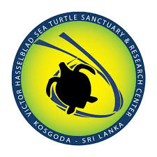
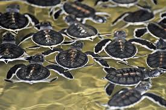
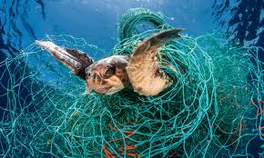

- Overview of Kosgoda Sea Turtle Conservation Center: The Kosgoda Sea Turtle Conservation Center, located on the southwestern coast of Sri Lanka, is dedicated to the protection and preservation of sea turtles. Established in response to declining sea turtle populations due to various threats, the center plays a crucial role in conservation efforts.
- Importance of Sea Turtle Conservation: Sea turtles are keystone species, playing a vital role in maintaining the health of marine ecosystems. Their presence helps regulate populations of jellyfish and seagrass, contributing to the balance of ocean ecosystems. Furthermore, they are significant indicators of the health of marine environments, making their conservation essential for overall marine biodiversity.
Content

Sea turtles at Kosgoda

Description of Main Species: The Kosgoda area is home to several species of sea turtles,
including the Green Turtle, Hawksbill Turtle, Loggerhead Turtle, and Olive Ridley Turtle.
Each species has unique characteristics and behaviors, influencing their conservation needs.
Threats to sea Turtles

Natural and Human-Induced Threats: Sea turtles face numerous threats,
both natural and human-induced. Natural threats include predation, disease,
and natural disasters. However, human activities pose the most significant risk,
including habitat destruction, pollution, climate change, bycatch in fishing gear, and poaching for their meat, shells, and eggs.
Conservation efforts
Rescue and Rehabilitation Programs: The Kosgoda Sea Turtle Conservation Center
operates rescue and rehabilitation programs for injured or sick sea turtles.
These programs provide medical treatment and rehabilitation to injured turtles,
with the aim of releasing them back into the wild once they have recovered.
Nesting Beach Conservation: One of the primary focuses of the center is the protection of nesting beaches. Staff and volunteers work to monitor nesting activity, protect nests from predation and human disturbance, and relocate nests if necessary to safer locations.
Conclusion
The Kosgoda sea turtle consevation actively engages with local communities
to raise awareness about sea turtle conservation and involve them in conservation efforts.
This involvement may include training local volunteers, providing alternative livelihoods to
reduce reliance on activities harmful to sea turtles, and working with fishermen to reduce bycatch.
Sea turtles play a critical role in marine ecosystems, but they face numerous threats that endanger their survival. The Kosgoda Sea Turtle Conservation Center works tirelessly to protect these iconic creatures through rescue and rehabilitation programs, nesting beach conservation, community engagement, and awareness campaigns.